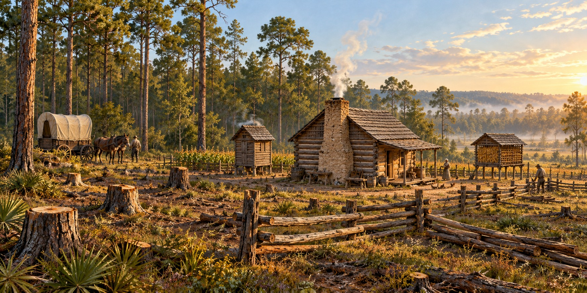

Building a Homestead
How Pioneer Families Turned Raw Florida Land into a Place Called Home

The wagon stopped at the edge of a clearing. Maybe a live oak stood at the far end, maybe a creek wound through the palmetto scrub to the south. The man climbed down, walked the ground, studied the sky and the slope of the earth and the direction of the breeze. Then he drove a stake. Building a homestead on the Florida frontier was not a single act. It was a sequence, and Florida did not forgive mistakes in it.
Reading the Land Before the First Log
Site selection decided whether a homestead thrived. Settlers looked for high ground, since even a few feet could keep a cabin dry in the rainy season; for fresh water close enough to carry, ideally a spring; for a spot that caught the summer breeze; and for good timber. Longleaf pine on sandy uplands meant building timber and turpentine; mixed hardwood hammocks meant rich soil for gardens and corn. Deer trails and turkey sign told them the land could feed a family until the first crops came in.
The First Week
The earliest shelter could be temporary while the family cleared land and prepared more permanent buildings. Felled timber supplied some of the construction material. Access to water, food and shelter had to be managed together, and the order of the work depended on the site and the family’s resources.
Cabin, Smokehouse, Crib, Well and Fence
A single log pen could provide the beginning of a house, with additional rooms or buildings added later. Cabins differed in their floors, roofs and corner joints. Building a dwelling was part of establishing a farm, rather than proof that every household completed the same sequence on the same schedule.
Outbuildings handled different needs: a smokehouse for meat preservation, a corn crib for grain, a stock pen for animals, and a well where a usable spring was unavailable. At Dudley Farm, the documented collection includes a smokehouse, corn crib, barn, separate kitchen and other buildings added as the farm developed.
The Barn Raising and the Neighbors
Large building tasks could require help from neighbors. Moving heavy timbers, preparing food and keeping ordinary farm work going were parts of the same effort. Such cooperation linked households, although the size of a crew and the time needed to finish a structure varied.
A Homestead Grows Over Years
A homestead grew over years as resources and needs changed. A second log pen might produce a larger house; a separate kitchen, dairy building or poultry shelter could follow. Dudley Farm’s surviving buildings show how one Florida farm expanded across generations, rather than offering a fixed timetable for all pioneer families.
What the Land Required
Heat required ventilation and breezy siting. Rain required elevation and drainage. Insects required smoke from smudge fires. Timber required knowing species: longleaf heartwood near the ground, cypress where it would be wet, live oak where strength mattered. Sandy soil required amendment with ash, kitchen waste and manure.
A Homestead as a Statement
The Armed Occupation Act of 1842 offered qualifying settlers 160 acres in the designated part of the peninsula. Its conditions included residence for five years, a house and at least five acres cleared for cultivation. The program encouraged settlement on land already connected to Native communities and the recent Seminole Wars. A grant size was a legal provision, not a measure of every Florida farm.
Quick Facts
| Early shelter | A dwelling was an early priority; form varied |
|---|---|
| Armed Occupation Act of 1842 | Qualifying 160-acre grant; five years’ residence, a dwelling and five acres cultivated |
| Essential outbuildings | Smokehouse, corn crib, well or spring box, stock pen |
| Site priorities | High ground, fresh water, breeze, timber, game |
| Fence | Split-rail worm fence; no nails |
| Water | A usable spring or well, depending on the site |
| Construction tools | Broadaxe, froe, drawknife, auger, crosscut saw |
| Neighbors | Barn raisings built both barns and community |
Did You Know?
Settlers cut the trees for their cabin from the clearing where it would stand.
A pioneer homestead was never finished.
Vocabulary
Homestead: the house, outbuildings and cleared land of a settler family.
Patent: a government document granting title to land.
Chinking: clay or other filler packed between cabin logs.
Discussion Questions
1. Why was site selection a survival decision?
2. What did a barn raising give a settlement besides a barn?
Related Articles
FLH-0049 — Log Construction Methods
FLH-0051 — Building with What the Land Provided
FLH-0056 — The Florida Smokehouse
Sources
Ste. Claire, Dana. Cracker: The Cracker Culture in Florida History. Museum of Arts and Sciences, Daytona Beach, 1998.
Armed Occupation Act of 1842. Bureau of Land Management, General Land Office Records. glorecords.blm.gov
Heritage Village of Pinellas County, Largo, FL.
Manatee Village Historical Park, Bradenton, FL.
Florida Memory. State Library and Archives of Florida. floridamemory.com
Florida State Parks — History of Dudley Farm
Florida Memory — Territorial land records and Armed Occupation Act